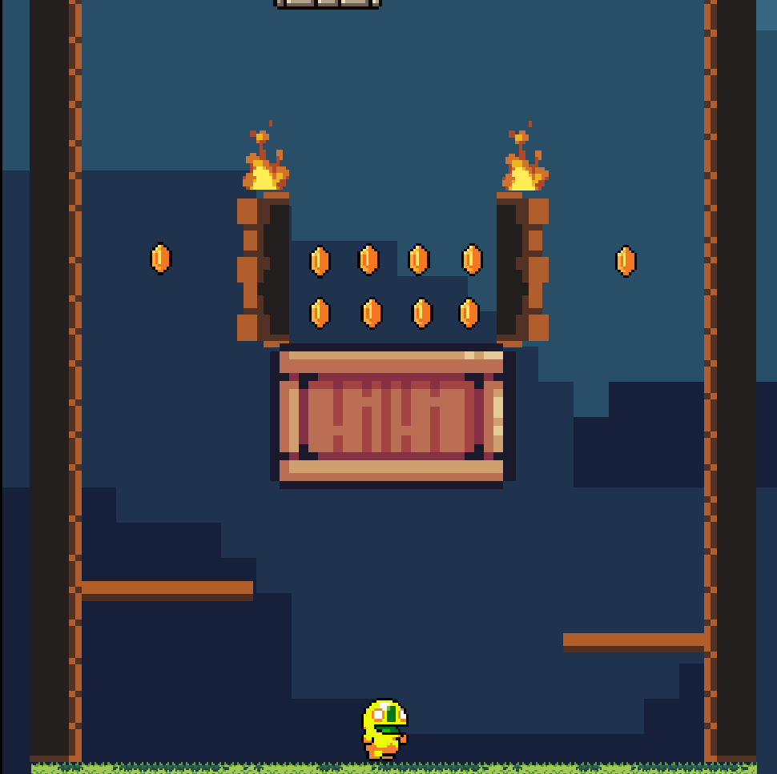
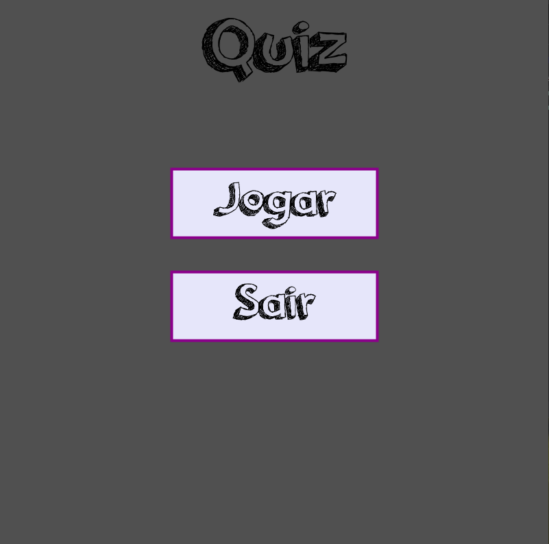
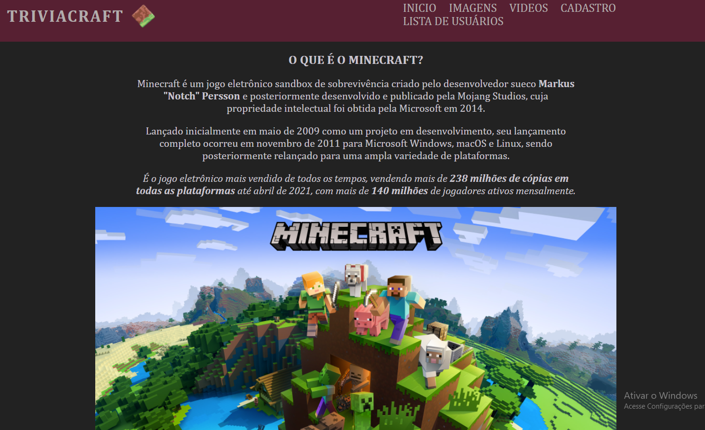
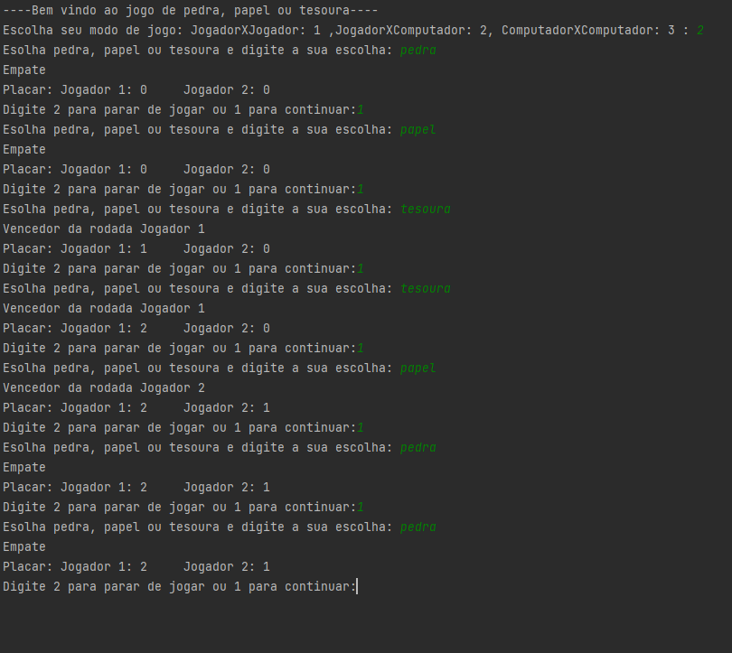
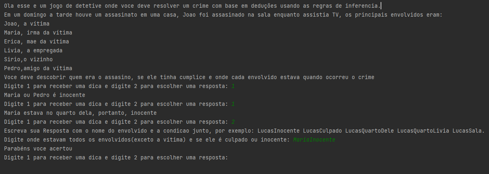

Olá meu nome é Lucas, Bem Vindos ao meu portifólio
Nós fizemos alguns trabalhos e aprendemos muitas coisas nesse semestre, aqui está um resumo de tudo.
Experiencia Criativa:Navegando na Computação
Temos a chance de desenvolver programas, jogos e aplicações web utilizando ambientes de programação visual e de programação script.
Projeto 1
Neste projeto fizemos um jogo de plataforma no Construct, onde o objetivo era coletar as moedas necessarias para passar de fase.

Projeto 2
Criamos um Quiz usando o Processing

Projeto 3
Fizemos um site dedicado ao jogo Minecraft, onde tem algumas informações do game e um sistema de contas de usuarios.

Fundamentos de Sistemas Ciberfísicos
Nesta matéria estudamos módulos microprocessados, mecanismos de comunicação e serviços em nuvem aplicados à Sistemas Ciber-Físicos e Internet das Coisas, em geral,
conhecemos as tecnologias, assim como um pouco das histórias dos sistemas operacionais e a arquitetura de computadores.
Raciocínio Algorítmico
Aprendemos a como projetar solução algorítmica, utilizando pensamento computacional,
de forma autônoma e implementar programa computacional, respeitando boas práticas de programação
Projeto 1
Implementamos um jogo de Joquempo em python, com os 3 modos de jogo.

Projeto 2
Implementamos um programa que funciona como uma maquina de vendas de bebidas.

Resolução de Problemas com Lógica Matemática
Trata de lógica matemática computacional, aprendemos,cálculos proposicionais
aplicando fórmulas para validar premissas e utilizando linguagem lógica, elaborar representações para
problemas em sentenças próprias da lógica dos predicados
Projeto 1
Desenvolvemos um projeto como um jogo de detetive, utilizando as regras de inferencia para realizar a conclusão.

Filosofia
Aprendemos a refletir sobre a condição humana nas dimensões pessoal, profissional e acadêmica, transformando opiniões em argumentos fundamentados.